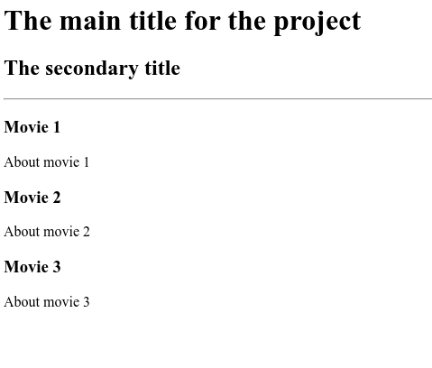
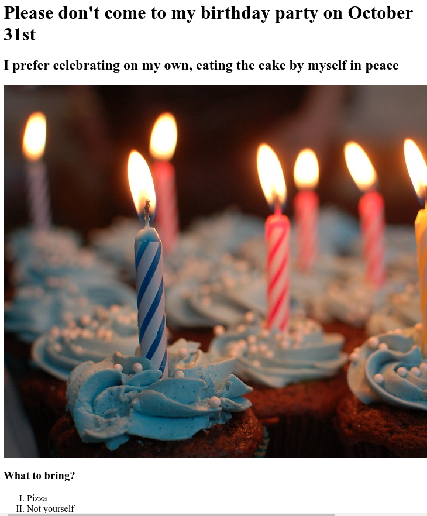

Bee's sloppy first project
I am most certainly not a web developer yet
My movie list project (that got deleted so I put in minimum effort to recreate it)

My BDay Invite Project (that gives insight into my personality)

About me
If you really must, contact me here